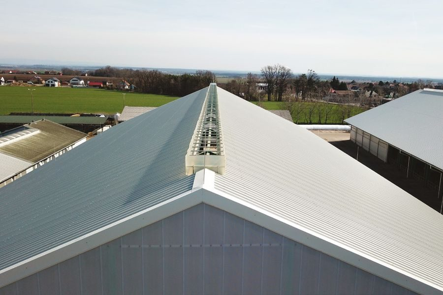

Vrata pro provozy, kde rozhoduje rozměr a používání.
Pro zemědělské i průmyslové provozy navrhujeme rolovací vrata EVR, skládací vrata, posuvná a křídlová vrata i lamelové průchody. Řešení vybíráme podle otvoru, prostoru okolo vrat, požadovaného ovládání a provozní zátěže. Vyrábíme ve vlastní hale v Křični, montujeme vlastním týmem.

Typ vrat vybíráme podle otvoru.
Nová produktová struktura rozlišuje hlavně rolovací vrata EVR a skupinu ostatních vrat. Díky tomu je jasné, kdy dává smysl rolo systém, kdy skládací vrata a kdy posuvné nebo křídlové řešení.
- Rolovací vrata EVRElektrická rolovací vrata v provedeních EVR 1 až EVR 5, včetně nadrozměrných variant a středové hřídele se zastřešením.
- Zateplená rolovací vrataProvedení do rozměru 4 × 4 m, vhodné především do dojíren, čekáren a míst s vyšším požadavkem na izolaci.
- Mechanická a řetízková vrataMechanické provedení do 5 m², řetízkové provedení do 20 m² včetně pádové brzdy.
- Skládací vrataNejsou rolovací. Vyrábíme je pro vnitřní i vnější použití, s požadavkem na odpovídající nadpraží podle šířky otvoru.
- Posuvná a křídlová vrataPosuvná vrata řeší nedostatek místa před otvorem, křídlová vrata se hodí tam, kde je prostor pro vykývnutí křídel.
- Lamelové průchodyOdepínací, pevné nebo posuvné provedení s lamelami šíře 200, 300 nebo 400 mm a tloušťkou 2 až 5 mm.
Tři typické situace, tři odlišná řešení.
Velký otvor ve stáji
Rolovací EVR nebo skládací vrata podle rozměru, nadpraží a požadovaného ovládání. U nadrozměrů řešíme typ pohonu i způsob kotvení.
Prostor před otvorem je omezený
Posuvná vrata se pohybují do strany a nepotřebují místo pro vykývnutí. Hodí se tam, kde by křídlové řešení překáželo provozu.
Častý průchod lidí nebo zvířat
Lamelové průchody omezují průvan a zároveň umožňují rychlý průchod bez otevírání celých vrat.
Z naší vlastní montáže.
Rolovací vrata

Vrata a ventilace

Posuvná nebo křídlová vrata
Zavolejte. Domluvíme zaměření.
Konzultace zdarma, nabídka do 48 hodin.